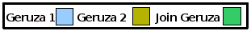

Beste geometriaren puntu bakoitza geometria honen puntu bat da, eta geometrien barnealdeek gitxienez puntu bat dute amankomunean (Within-aren alderantzizkoa). Adibidea:

Adierazitako erlazio espazialarekin bat eginten duten bigarren geruzako featureak dituen geruza berri bat sortzen du, estandar hau jarraituz:
Lehenengo Geruza Erlazioa Bigarren Geruza
Geruza desberdinak adierazteko erabilitako koloreen araua hurrengo hau da:

Join Geom eragiketa espazial desberdinak honako hauek dira:
Beste geometriaren puntu bakoitza geometria honen puntu bat da, eta geometrien barnealdeek gitxienez puntu bat dute amankomunean (Within-aren alderantzizkoa). Adibidea:
Geometriek barne puntu batzuk berberak dituzte baina ez guztiak, eta gurutzaketaren dimentsioa gutxienez geometria baten baino txikiagoa da. Adibidea:

Geometriek ez dute punturik amankomunean. Adibidea:

Geometriek gitxienez puntu bat amankomunean dute, eta geometria bakoitzako puntu bat ere ez dago beste geometriaren kanpoan. Adibidea:

Geometriek gitxienez puntu bat amankomunean dute. Adibidea:

Geometriek puntu bateren bat amankomunean dute, baina ez guztiak, eta dimentsio berbera dute. Adibidea:

Geometriek gitxienez puntu bat amankomunean dute baina beraien barnealdeak ez dira gurutzatzen. Adibidea:

Geometria honen puntu bakoitza beste geometriaren puntu bat da, eta geometria bakoitzaren barnealdeek puntu bat dute amankomunean. Adibidea:

Eragiketa Espazialen Bistara joan, eta Join Geom aukeratu Eragiketen zerrendatik.
Join Geom eragiketaren sarrera aukerak agertuko dira.